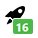
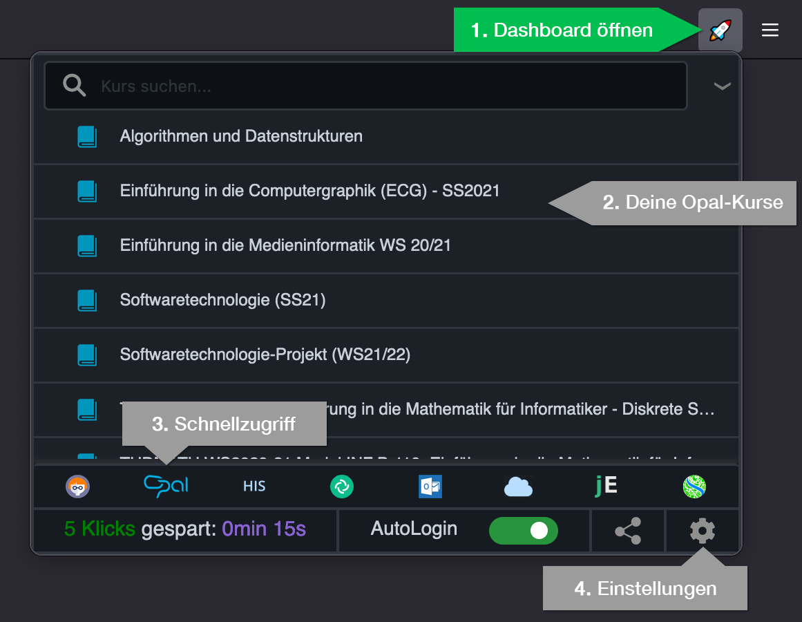
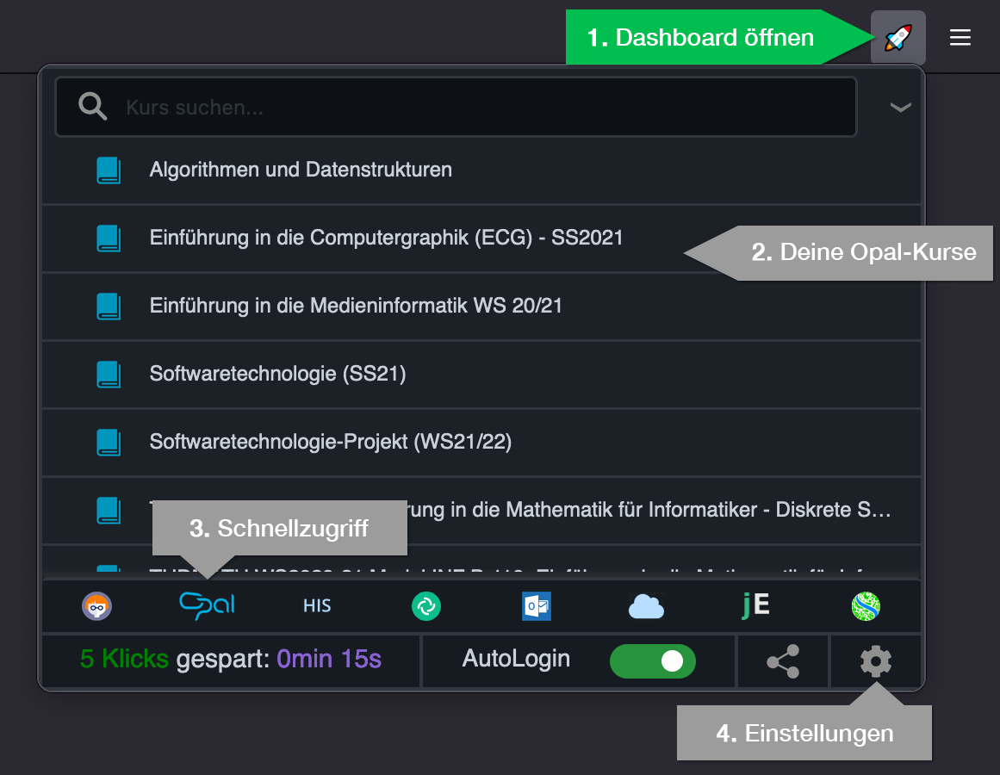
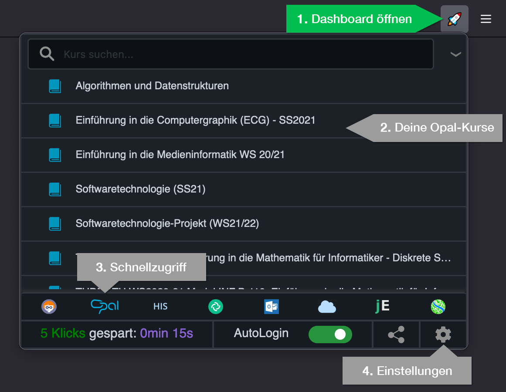

Hier kannst du alle Funktionen entdecken und Einstellungen vornehmen.
Schicke uns ganz unkompliziert eine Mail mit Vorschlägen an frage@tu-fast.de, wenn du auch Anpassungen für deinen Studiengang in TUfast haben
möchtest. Wir freuen uns über deine Hilfe 🙂
Werde in alle Online-Portale der TU Dresden automatisch angemeldet. Dafür müssen deine selma
Login-Daten sicher auf diesem PC gespeichert werden. Die Daten werden nur lokal und verschlüsselt
gespeichert.
Du kannst sie jederzeit löschen. TUfast nimmt dir auch alle Klicks beim Anmelden ab!
Hier kannst du alle Daten löschen:
TUfast zeigt die Anzahl deiner ungelesenen Mails im TU-Dresden-Postfach (OWA) als kleines Icon oben rechts neben
der Rakete an.
keine neuen Mails 5 neue Mails
16 neue Mails
Das Abrufen der Anzahl deiner ungelesenen Mails kann bis zu 5 Minuten dauern.
Weil TUfast dafür eine spezielle Berechtigung braucht, drücke bitte auf "Erlauben" im folgenden
Pop-Up.
Aus Ein
Für diese Funktion ruft TUfast die Anzahl deiner ungelesenen Mails vom Mail-Server der TU
Dresden ab. Zum Anmelden werden deine Login-Daten verschlüsselt übertragen. Diese Verbindung ist sicher.
Es funktioniert genauso, als würdest du deine Mails über den Browser abrufen.
Finde alle deine OPAL-Kurse direkt im Dashboard.
öffne das Dashboard oben rechts oder mit Alt+Q (ändern).

Für Power-User ⚡⚡⚡
Öffne dein Dashboard mit Alt+Q und beginne direkt zu tippen. Wenn du dann Enter drückst,
wird der erste Kurs aus der Liste geöffnet.
Damit die Einstellungen wirksam werden, musst du OPAL einmal aktualisieren. Für Firefox funktioniert dieses Feature leider nicht stabil.
Möglicherweise braucht TUfast eine spezielle Berechtigung. Drücke bitte auf
"Erlauben" im folgenden
Pop-Up.
PDF-Dokumente aus OPAL direkt im Browser öffnen, anstatt sie herunterzuladen.
Öffne OPAL & Co. einfach mit Tastenkombinationen. Hier kannst du alle Shortcuts sehen und ändern.
Alt+Q → Dashboard öffnen
Alt+O → OPAL öffnen
Alt+M → Mail (Outlook-Web-App) öffnen
Alt+J → jExam öffnen
Gib z.B. "tumail" in der Google-Suche ein, um direkt zur Outlook-Web-App zu kommen. Es werden die meisten Suchmaschinen unterstützt!
Aus
Ein
tumail → Outlook Web App
OPAL → OPAL
tucloud → Cloudstore TU Dresden
hisqis → Hisqis TU Dresden
selma → selma TU Dresden
jexam → jExam
tumatrix → Matrix-Chat TU Dresden
magma → Magma TU Dresden
tumed → eportal.med.tu-dresden
Hey, lieber Nutzer 🙂 Das TUfast-Team sendet liebe Grüße! TUfast ist ein quelloffenes und studentisches Projekt.
Wenn du es unterstützen möchtest, schau mal in der Sektion oben drüber nach 😉.
Fragen und Feedback gern an frage@tu-fast.de. Ansprechpartner ist Oliver Hausdörfer.
So berechnen sich die gesparten Klicks:
Ein gesparter Klick = 3 Sekunden
Einen Shortcut verwenden = 2 gesparte Klicks
Eine automatische Anmeldung = 3 gesparte Klicks
Einen Kurs über Dashboard aufrufen = 3 gesparte Klicks
Eine Weiterleitung der Google-Suche = 2 gesparte Klicks
 5 neue Mails
5 neue Mails 
